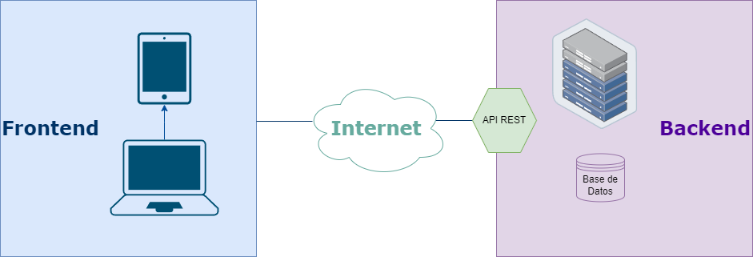

Las habilidades tecnológicas son todas las aptitudes y conocimientos,
principalmente técnicos, que te permiten realizar tareas específicas
relacionadas con la tecnología y el entorno digital. Ya sabes el valor
de las habilidades blandas y luego aprenderás sobre las habilidades
gerenciales. Esta tríada hacen a un profesional integral.
Al mejorar las habilidades tecnológicas que tienes no solo demostrarás
ser una persona que busca superarse constantemente sino que tendrás
mejores resultados en tus labores. Las empresas cada vez son más
exigentes en los procesos de reclutamiento y esto varía para cada
profesión. No debes olvidar siempre estar atento a las habilidades
tecnológicas más importantes que te solicitan y capacitarte para ello.
Las habilidades tecnológicas que nos incumben en este caso son las
relacionadas al desarrollo web, en especial el frontend.
Desarrollo web

El desarrollo web se suele dividir entre frontend y backend.
En ambas ramas hay una gran variedad de tecnologías que se pueden
usar. Por ejemplo, en frontend podemos mencionar las esenciales que
son: HTML, CSS y JavaScript. Hay tambien librerías, frameworks y
otras herramientas que nos facilitan el desarrollo como jQuery,
React, Vite, ESLint, Bootstrap.
En backend podemos usar Node con Express, Python con Django, Java
con Spring Boot, PHP con Laravel, C++ con Qt.
Si te desenvuelves en ambas entonces eres fullstack. Fullstack no es
que sabes todo a profundidad, sino sabes de ambos mundos, pero te
especializas en frontend o backend.
Desarrollo web frontend
Los desarrolladores frontend trabajan estrechamente con los
diseñadores UI/UX y el backend. Los desarrolladores de frontend
crean los elementos de un sitio web con los que interactúan los
usuarios. No son diseñadores de UX, pero un buen desarrollador de
frontend sabe cómo crear una experiencia positiva para los
visitantes del sitio web.
El llevar el diseño a un sitio o
aplicación web viva va mas alla de la maquetación, es saber de
optimización de carga de contenidos, recibir peticiones y enviar
respuestas a APIs o backends, conocer de CMS, accesibilidad, pruebas
y entrega continua, etcétera., y de eso se trata el frontend.
Esenciales de JavaScript
JavaScript
JavaScript, usualmente abreviado JS es un lenguaje de programación
interpretado (compilado en tiempo de ejecución o JIT) mediante un
motor que está en el navegador, el más popular es V8. Hace a una
web estática, dinámica. En el backend JavaScript se ejecuta en el
entorno de ejecución Node.
Es un lenguaje multiparadigma, podemos usar técnicas de
programación funcional, orientada a objetos pero basada en
prototipos, reactiva, basada en componentes; tiene tipado débil y
dinámico, entre otras. Posee gran cantidad de APIs por ejemplo, el
DOM es una API para acceder a los elementos HTML desde JS. La
especificación oficial se llama ECMAScript (ECMA 262).
Usualmente JavaScript suele utilizar transpiladores como Babel
que traducen el código de JS moderno a JS antiguo para que sea
compatible con navegadores antiguos. También se suele usar
empaquetadores de módulos como Webpack o Vite para empaquetar el
código JS en un solo archivo y optimizarlo.
Otra herramienta utilizada es TypeScript que es un superset de JS
que agrega tipado estático y otras características, que luego
transpila a JS.
Variables
Es el nombre genérico que se le da a pequeños espacios de memoria donde guardas una información determinada, de forma muy similar a las incógnitas en matemáticas. Un programa puede tener muchas variables, y cada una de ellas tendrá un nombre, un valor y un tipo de dato. El nombre se utiliza para diferenciarlas unas de otras y hacer referencia a ellas, el valor es la información que contienen y el tipo de dato es la naturaleza de ese valor. Se llaman variables porque podemos cambiarle su valor a lo largo del programa, según necesitemos.
Constante es el mismo concepto de una variable, salvo que en este caso, la información que contiene es siempre la misma (no puede variar).
En JavaScript, las variables se declaran con la palabra reservada let y las constantes con const. El nombre de la variable o constante debe comenzar con una letra o un guión bajo, y puede contener letras, números y guiones bajos. No se pueden utilizar palabras reservadas como nombres de variables o constantes.
let foo;
const bar = 100;
foo = "🏋🏻♀️";
console.log(`Haz ${bar} ${foo}`);
Operadores
Operadores aritméticos
Los operadores aritméticos toman valores numéricos (ya sean literales o variables) como sus operandos y devuelven un solo valor numérico.
Operador
Descripción
Ejemplo
Resultado
+
Suma
3 + 4
7
-
Resta
3 - 4
-1
*
Multiplicación
3 * 4
12
/
División
3 / 4
0.75
%
Módulo
3 % 4
3
**
Exponenciación
3 ** 4
81
++
Incremento
let a = 3; a++;
4
--
Decremento
let a = 3; a--;
2
Operadores lógicos
Los operadores lógicos se utilizan normalmente con valores booleanos (lógicos); cuando lo son, devuelven un valor booleano.
Operador
Descripción
Ejemplo
Resultado
&&
AND
true && true
true
||
OR
true || false
true
!
NOT
!true
false
Operadores de asignación
Un operador de asignación asigna un valor a su operando izquierdo basándose en el valor de su operando derecho.
Operador
Descripción
Ejemplo
Resultado
=
Asignación
x = y
x = y
+=
Asignación con adición
x += y
x = x + y
-=
Asignación con sustracción
x -= y
x = x - y
*=
Asignación con multiplicación
x *= y
x = x * y
/=
Asignación con división
x /= y
x = x / y
%=
Asignación con módulo
x %= y
x = x % y
**=
Asignación con exponenciación
x **= y
x = x ** y
Operadores de igualdad
El resultado de evaluar un operador de igualdad siempre es de tipo Boolean basado en si la comparación es verdadera.
Operador
Descripción
Ejemplo
Resultado
==
Igualdad
3 == var1
false
===
Igualdad estricta
3 === var1
false
!=
Diferencia
3 != var1
true
!==
Diferencia estricta
3 !== var1
true
>
Mayor que
var2 > var1
true
<
Menor que
var1 < var2
true
>=
Mayor o igual que
var2 >= var1
true
<=
Menor o igual que
var2 <= var1
false
Estructuras de control
Las estructuras de control dirigen la ejecución de las instrucciones de un programa disciplinadamente, en vez de saltar de un sitio a otro de forma arbitraria o impredecible. Solo tienen un punto de entrada y uno de salida. Hay tres tipos de estructuras de control: secuenciales, condicionales y repetitivas; estas en conjunto funda la base de la programación estructurada.
Estructuras de control
Las estructuras de control de flujo se escriben normalmente dentro de declaraciones de bloque, que son delimitadas por llaves {}. Las declaraciones de bloque son opcionales cuando se usa una sola sentencia.
Secuenciales
Las estructuras de control secuenciales son las más simples, se ejecutan una tras otra, de arriba hacia abajo, de izquierda a derecha. Son expresiones cortas que se ejecutan una sola vez.
Script que muestra un mensaje en la consola.
console.log("Hola mundo");
Condicionales
Las estructuras de control condicionales permiten ejecutar un bloque de código si se cumple una condición, de lo contrario se ejecuta otro bloque de código. Las condicionales pueden ser if... else, switch y ternario.
Ejemplos de código con condicionales
Script que captura dos números y determina el mayor de ellos.
let primerNumero = Number(prompt("Ingresa el primer número"));
let segundoNumero = Number(prompt("Ingresa el segundo número"));
if (primerNumero > segundoNumero) {
alert(`El ${primerNumero} es mayor que el ${segundoNumero}`);
} else if (primerNumero < segundoNumero) {
alert(`El ${segundoNumero} es mayor que el ${primerNumero}`);
} else {
alert("Los números son iguales");
}
let primerNumero = Number(prompt("Ingresa el primer número"));
let segundoNumero = Number(prompt("Ingresa el segundo número"));
let tercerNumero = Number(prompt("Ingresa el tercer número"));
if (primerNumero > segundoNumero && primerNumero > tercerNumero) {
alert(
`El ${primerNumero} es mayor que el ${segundoNumero} y el ${tercerNumero}`
);
} else if (segundoNumero > primerNumero && segundoNumero > tercerNumero) {
alert(
`El ${segundoNumero} es mayor que el ${primerNumero} y el ${tercerNumero}`
);
} else if (tercerNumero > primerNumero && tercerNumero > segundoNumero) {
alert(
`El ${tercerNumero} es mayor que el ${primerNumero} y el ${segundoNumero}`
);
} else {
alert("Los números son iguales");
}
Script que presenta un día de la semana a partir de un número asociado.
let dia = Number(prompt("Ingresa un número del 1 al 7"));
switch (dia) {
case 1:
alert("Lunes");
break;
case 2:
alert("Martes");
break;
case 3:
alert("Miércoles");
break;
case 4:
alert("Jueves");
break;
case 5:
alert("Viernes");
break;
case 6:
alert("Sábado");
break;
case 7:
alert("Domingo");
break;
default:
alert("El número no corresponde a un día de la semana");
}
Los ciclos permiten ejecutar un bloque de código un número determinado de veces o hasta que se cumpla una condición. Los ciclos pueden ser while, do... while y for.
Ejemplos de código con ciclos
Script que presenta la tabla de multiplicación de cierto número.
let numero = Number(
prompt("Ingresa un número y te mostraré su tabla de multiplicación: ")
);
let resultado = 0;
for (let item = 1; item <= 10; item++) {
resultado = numero * item;
alert(`${numero} x ${item} = ${resultado}`);
}
let numero = Number(
prompt("Ingresa un número y te diré si es perfecto: ")
);
let suma = 0;
let resultado = 0;
for (let item = 1; item < numero; item++) {
if (numero % item == 0) {
suma += item;
}
}
if (suma == numero) {
alert(`El número ${numero} es perfecto`);
} else {
alert(`El número ${numero} no es perfecto`);
}
let numero = Number(prompt("Ingresa un número y te diré si es primo: "));
let contador = 0;
for (let item = 1; item <= numero; item++) {
if (numero % item == 0) {
contador++;
}
}
if (contador == 2) {
alert(`El número ${numero} es primo`);
} else {
alert(`El número ${numero} no es primo`);
}